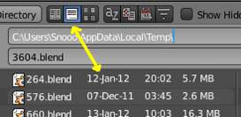

Recovering Data¶
Blender provides a number of ways for the user to recover from mistakes, and reduce the chance of losing their work in the event of operation errors, computer failures, or power outages. There are two ways for you to recover from mistakes or problems:
At the User Level (Relating to Actions)
- For your actions, there are options like Undo, Redo and an Undo History, used to roll back from mistakes under normal operation, or return back to a specific action.
- Blender also has new features like Repeat and Repeat History, and the new Redo Last which you can use in conjunction with the options listed.
At the System Level (Relating to Files)
There are options to save your files like Auto Save that saves your file automatically over time, and Save on Quit, which saves your Blender file automatically when you exit Blender.
Note
In addition to these functions being enabled by default, the Save on Quit functionality cannot be disabled.
Options for Files (System Level)¶
Save and Auto Save¶
Auto Save options.
Computer crashes, power outages or simply forgetting to save can result in the loss or corruption of your work. To reduce the chance of losing files when those events occur, Blender can use an Autosave function. The File tab of the 用户首选项 allows you to configure the two ways that Blender provides for you to regress to a previous version of your work.
See Auto Save for details.
Recovering Auto Saves¶
- Recover Last Session
will open the
quit.blendthat is saved into the Temporary Directory when you exit Blender. Note that files in your Temporary Directory may be deleted when you reboot (depending on your system configuration).Blender 文件浏览器.
Tip
When recovering files, you will navigate to your temporary folder. It is important, when browsing, to enable the detailed list view. 其他wise, you will not be able to figure out the dates of the auto-saved blend-files. (See Figure: Blender 文件浏览器)
- Recover Auto Save
allows you to open the Auto Saved file. After loading the Auto Saved version, you may save it over the current file in your working directory as a normal blend-file.
Important
When recovering an Auto Saved file, you will lose any changes made since the last Auto Save was performed. Only one Auto Saved file exists for each project (i.e. Blender does not keep older versions - hence you will not be able to go back more than a few minutes with this tool).